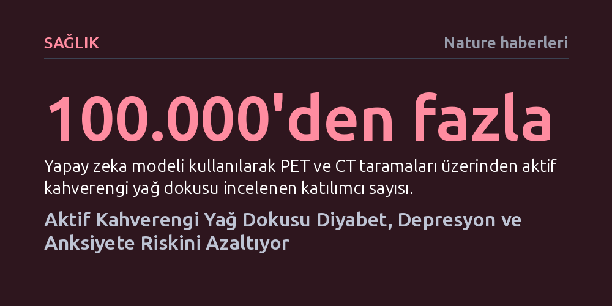

SAGLIK · Nature haberleri · 2026-10-15
100 binden fazla kişinin taramalarını inceleyen kapsamlı araştırma, vücutta kalori yakan aktif kahverengi yağ miktarının tip 2 diyabet, depresyon ve anksiyete riskini belirgin biçimde düşürdüğünü gösterdi. Dokunun miktarı arttıkça hastalıklara karşı sağlanan koruyucu etki de güçleniyor.
Vücut yağını sadece kalori depolayan zararlı bir kitle olarak görme algısını yıkarak, belirli yağ türlerinin metabolik ve ruhsal sağlığı koruyan aktif bir kalkan işlevi gördüğünü kanıtlıyor.

İnsanların zihnindeki yağ imgesi genellikle göbek veya bel çevresinde biriken, fazla kalorileri depolayan beyaz yağ dokusudur. Oysa vücutta bunun tam tersi bir mekanizmayla çalışan ve 'kahverengi yağ' olarak adlandırılan ikinci bir doku türü bulunur. Özellikle boyun, köprücük kemiği çevresi, koltuk altı ve göğüs bölgesinde yerleşen bu doku, kalori depolamak yerine onları yakarak doğrudan ısı üretir.
Bugüne kadar yapılan en geniş ölçekli araştırma, aktif kahverengi yağa sahip bireylerin yalnızca metabolik değil, psikiyatrik sorunlara karşı da belirgin bir avantaja sahip olduğunu ortaya koydu. İncelenen 100 binden fazla kişinin verileri; aktif kahverengi yağ taşıyanlarda tip 2 diyabet, klinik depresyon ve anksiyete görülme sıklığının kayda değer ölçüde azaldığını gösteriyor. Üstelik vücuttaki aktif kahverengi yağ miktarı arttıkça, bu hastalıklara karşı sağlanan koruma da paralel olarak güçleniyor.
Bilim insanları kahverengi yağın ısı üretme yeteneğini on yıllardır biliyordu; ancak bu dokunun yalnızca yeni doğan bebekleri soğuktan korumaya yaradığı düşünülüyordu. Tıp dünyasındaki yaygın kabul, bebeklerin titreme refleksi geliştirip kas hareketleriyle ısınmaya başlamasının ardından bu yağın bütünüyle eriyip yok olduğu yönündeydi.
Bu biyolojik ezber 2009 yılında peş peşe yayımlanan öncü araştırmalarla bozuldu ve kahverengi yağ dokusunun yetişkin insanlarda da varlığını sürdürdüğü ilk kez kanıtlandı. Ancak dokunun her bireyde aynı oranda bulunmaması ve vücuttaki dağılımının güç tespit edilmesi, geniş kitlelerdeki sağlık etkilerinin somutlaştırılmasını bugüne dek geciktirmişti.
Kahverengi yağ dokusunu sıradan yöntemlerle görüntülemek zordur; çünkü dokunun saptanabilmesi için metabolik olarak uyarılması ve enerji kaynağı olarak glikoz tüketmesi gerekir. Araştırmacılar bu dokuyu izlemek için katılımcılara radyoaktif işaretli özel bir glikoz vererek pozitron emisyon tomografisi (PET) ile bilgisayarlı tomografiyi (CT) birlikte kullandı. Taramalar, glikozu hızla içine çeken dokuların parıldamasını sağlayarak kahverengi yağın tam olarak nerede ve hangi yoğunlukta aktifleştiğini netleştirdi.
Bu görüntüleme protokolü aynı zamanda kanser teşhisi ve takibinde rutin olarak kullanılır. The Rockefeller Üniversitesi'nden Paul Cohen liderliğindeki ekip, Memorial Sloan Kettering Kanser Merkezi ile iş birliği yaparak bu taramalardan geçmiş 100 binden fazla hastanın devasa veri setini inceledi. Araştırmacılar, her taramadaki aktif kahverengi yağ miktarını tek tek elle ölçmek yerine özel bir yapay zeka modelinden yararlanarak dokunun hacmini ve metabolik hareketliliğini hassas biçimde hesapladı.
Elde edilen sonuçlar tıp dünyasında büyük bir ilgiyle karşılandı. Harvard Tıp Fakültesi'nden moleküler biyolog Shingo Kajimura çalışmayı "Bu, alandaki en kapsamlı ve muhtemelen en kayda değer çalışmalardan biri" sözleriyle değerlendiriyor. Kahverengi yağın insülin dengesinin ötesine geçip ruh hali ve duygu durum bozukluklarıyla da güçlü bir ilişki sergilemesi, metabolizma ile zihin sağlığı arasındaki ortak mekanizmalara dair yepyeni pencereler açıyor.
Yine de çalışmanın geriye dönük (retrospektif) hasta kayıtlarına dayanması, kahverengi yağın bu sağlık kazanımlarının doğrudan 'nedeni' olduğunu kesinleştirmeye yetmiyor. Uzmanlar, kahverengi yağın tek başına koruyucu bir kalkan mı olduğu yoksa genel olarak daha sağlıklı işleyen bir biyolojinin yan ürünü olarak mı belirdiği sorusunu yanıtlamak için ileriye dönük yeni klinik deneylerin şart olduğunu vurguluyor.